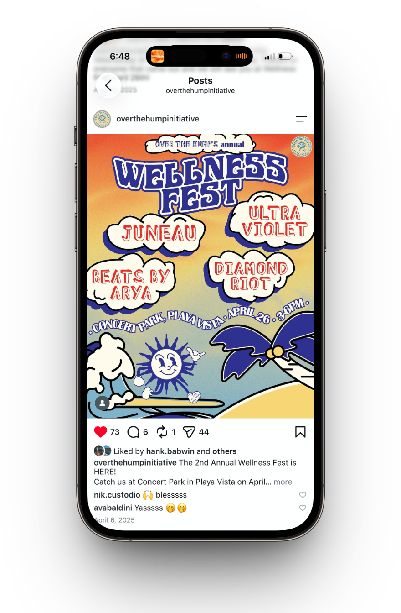
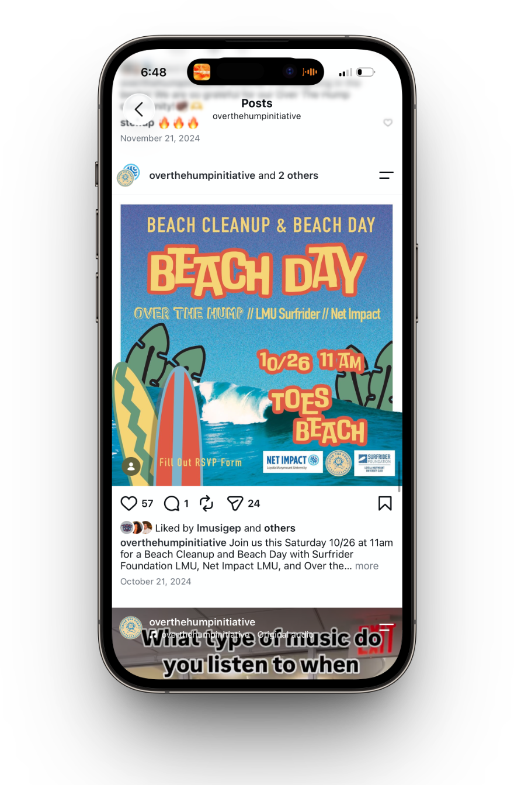
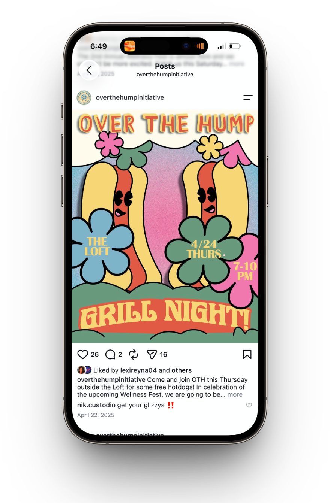
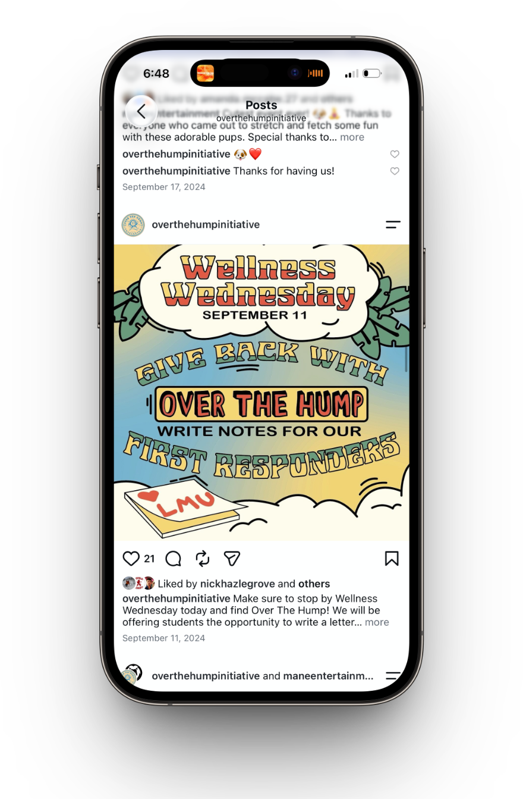

Developed brand identity for a student wellness organization focused on mental health at the university level — creating a visual language that felt safe, inclusive, and authentic to who students are.



